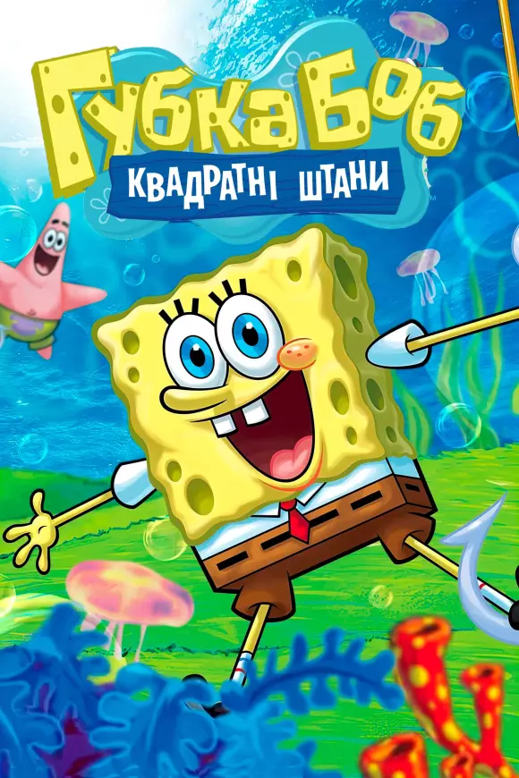

Губка Боб — один із найвідоміших мультяшних героїв сучасності. Він живе на дні океану в містечку Бікіні Боттом, у будиночку-ананасі. Губка Боб — це яскраво-жовта морська губка у квадратних штанях, завжди усміхнений, доброзичливий і сповнений енергії. Він працює кухарем у закусочній «Красті Краб», де готує улюблені крабсбургери.У Губки Боба багато друзів: морська зірка Патрік — його найкращий товариш, білочка Сенді, яка живе під куполом, та равлик Гері, що більше схожий на домашнього кота. А от сусід Сквідвард, восьминіг-меланхолік, часто дратується від шуму та безмежного оптимізму Боба.

Його головна мрія — стати найкращим кухарем і приносити радість усім відвідувачам. Хоча інколи через надмірний ентузіазм він потрапляє у кумедні або навіть дивні ситуації. У Губки Боба багато друзів: морська зірка Патрік — його найкращий товариш, білочка Сенді, яка живе під куполом, та равлик Гері, що більше схожий на домашнього кота. А от сусід Сквідвард, восьминіг-меланхолік, часто дратується від шуму та безмежного оптимізму Боба. Мультсеріал про Губку Боба відомий своєю гумористичною атмосферою, яскравими персонажами та тим, що його можуть дивитися як діти, так і дорослі. Він вчить дружбі, щирості, вмінню бачити щось добре навіть у дрібницях і ніколи не втрачати радості від життя.Губка Боб — це неймовірно веселий і добрий герой, який завжди бачить світ у яскравих кольорах. Він живе на дні океану й кожного дня прокидається з усмішкою, готовий до нових пригод. Його улюблене заняття — робота в ресторані «Красті Краб», де він з радістю готує найсмачніші крабсбургери.

Попри свою наївність, Губка Боб завжди намагається допомагати іншим. Він ніколи не здається, навіть коли щось не виходить. Його оптимізм і віра в добро заражають усіх навколо. Саме тому його люблять і друзі, і навіть ті, хто іноді сердиться — як, наприклад, Сквідвард. ме Разом із Патріком вони постійно вигадують щось нове: ловлять дуз, грають, будують пісочні замки чи просто мріють. Їхні пригоди нагадують, що навіть у найзвичайнішому дні можна знайти щось особливе. Мультфільм про Губку Боба навчає цінувати дружбу, залишатися собою та радіти життю, навіть коли воно здається трохи дивним — як Бікіні Боттом.
Цікаві факти
- 🧽 Губка Боб справді губка! Спочатку творець мультфільму Стівен Хілленбург хотів зробити його схожим на справжню морську губку, але потім вирішив, що квадратна форма виглядає веселіше.
- Він працює кухарем у «Красті Краб», і його найулюбленіша страва — крабсбургер. Але секретний рецепт цієї страви ніхто не знає, навіть сам Губка Боб!
- 🌊 Місто, де живе Боб, називається Бікіні Боттом, і воно розташоване під реально існуючим островом Бікіні в Тихому океані.
- 🎓 Творець мультфільму був морським біологом. Саме тому підводний світ у мультфільмі такий цікавий і детальний.
- 😂 Губка Боб ніколи не злиться. Він завжди залишається добрим і позитивним, навіть коли все йде не так, як треба.
- 🐌 Його равлик Гері — це як кіт. Він нявкає, спить цілими днями і любить ласку — тільки під водою!
- 🎵 У Губки Боба є своя пісня! Починається вона зі слів: «Хто живе в ананасі під морем?» — і знають її, мабуть, усі діти світу.
- 💛 Він вважає, що дружба — це головне. Його найкращий друг Патрік завжди поруч, навіть коли їхні ідеї здаються зовсім божевільними.
- 🪸 Мультфільм вже понад 25 років, але він зовсім не старіє.
- 🌈 Губка Боб — символ оптимізму. Його часто використовують як приклад того, як треба любити життя, роботу й людей навколо.